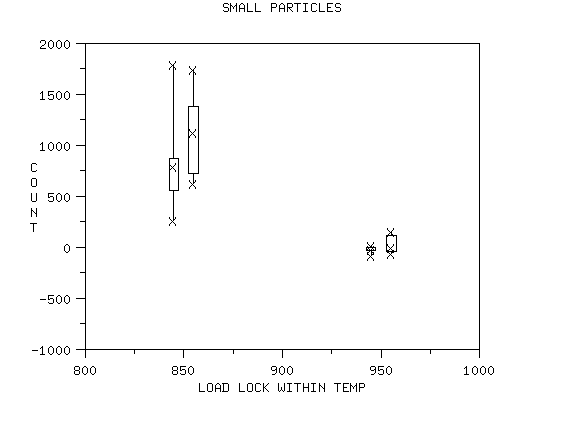
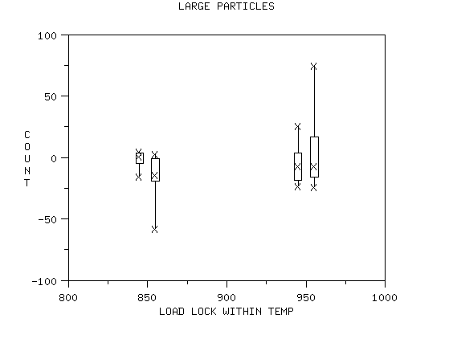

|
3.
Production
Process Characterization
3.4. Data Analysis for PPC 3.4.2. Exploring Relationships
|
|||
| It is important to identify interactions | The final step (and perhaps the most important one) in the exploration phase is to find any first order interactions. When the difference in the response between the levels of one factor is not the same for all of the levels of another factor we say we have an interaction between those two factors. When we are trying to optimize responses based on factor settings, interactions provide for compromise. | ||
| The eyes can be deceiving - be careful | Interactions can be seen visually by using nested box plots. However, caution should be exercised when identifying interactions through graphical means alone. Any graphically identified interactions should be verified by numerical methods as well. | ||
| Previous example continued | To continue the previous example, given below are nested box plots of the small and large particles. The load lock is nested within the two temperature values. There is some evidence of possible interaction between these two factors. The effect of load lock is stronger at the lower temperature than at the higher one. This effect is stronger for the smaller particles than for the larger ones. As this example illustrates, when you have significant interactions the main effects must be interpreted conditionally. That is, the main effects do not tell the whole story by themselves. | ||
| For small particles, the load lock effect is not as strong for high temperature as it is for low temperature |
The following is the box plot of small particles for load
lock nested within temperature.
 We conclude from this plot that for small particles, the load lock effect is not as strong for high temperature as it is for low temperature. |
||
| The same may be true for large particles but not as strongly |
The following is the box plot of large particles for load
lock nested within temperature.
 We conclude from this plot that for large particles, the load lock effect may not be as strong for high temperature as it is for low temperature. However, this effect is not as strong as it is for small particles. |
||